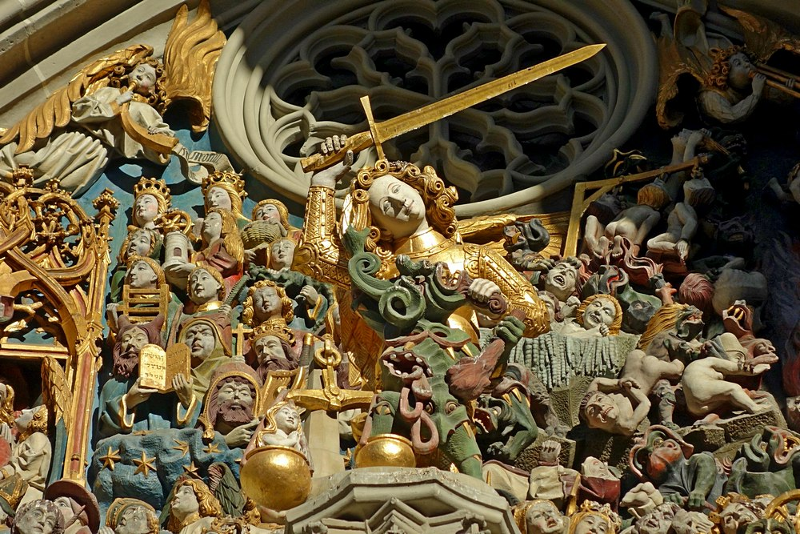
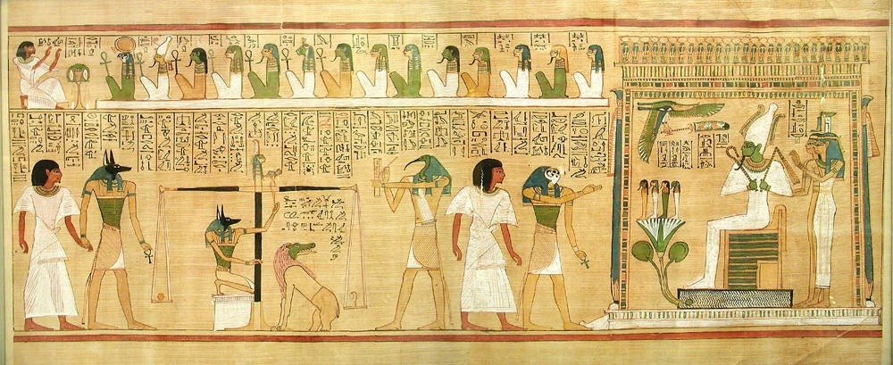
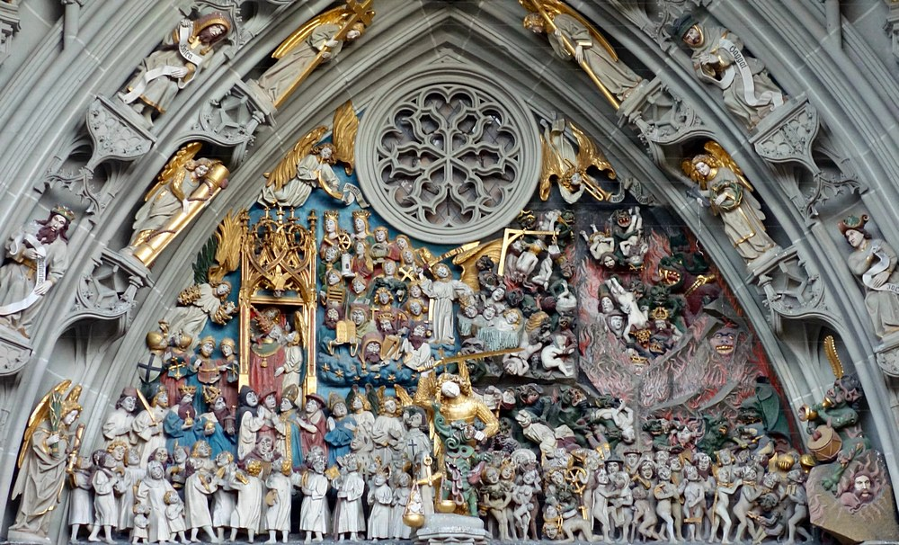
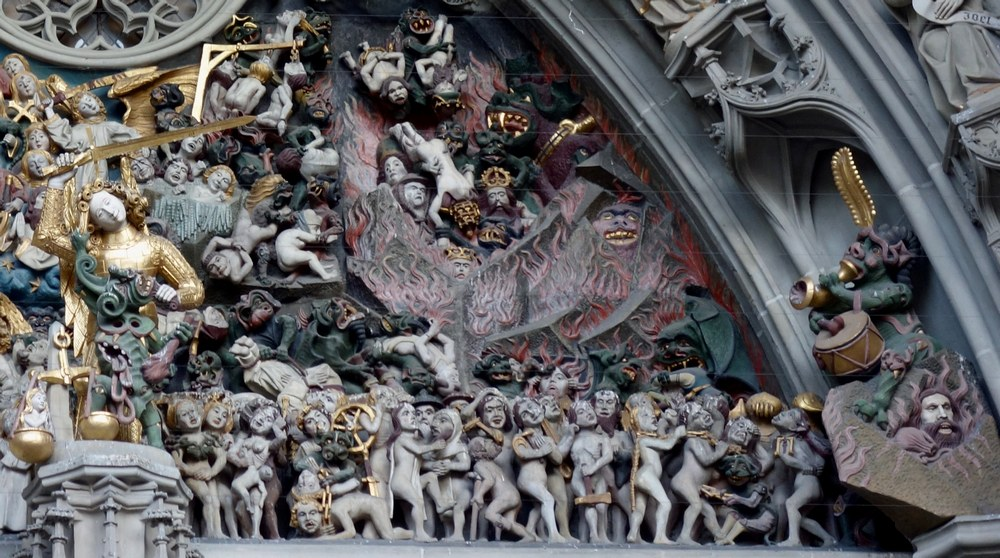
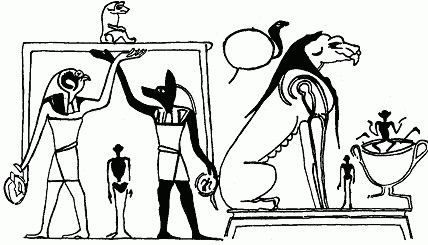

Wenn man der Altorientalistik nahe steht und sich das Portal des Berner Münsters genauer betrachtet (vgl. Abb. 3) eröffnet sich plötzlich ein ganz neuer Blick auf die manchmal etwas belächelte Volksfrömmigkeit des Mittelalters, mit ihren bildhaft imposant ausgedrückten ‹Recht–Unrecht›–, ‹Himmel–Hölle›–Mahnungen, die die überwiegend illiterate Bevölkerung das Fürchten vor dem ‹Jüngsten Gericht› lehren sollte. Unerwartet werden, zunächst vermutete, Parallelen zum alten Ägypten sichtbar.
«Gewogen worden bist du...» (Dan 5,27)
Wägeszene in der Gerichtsdarstellung am Berner Münsterportal. (Bild: Adriana Basso Schaub)
Zum Beispiel in der Gerichtsszene des Tympanons des Berner Münsters aus dem 15. Jahrhundert. Mit eindrücklichen Farben und Formen wird hier in eine ‹himmlische› und eine ‹höllische› Seite unterteilt und im vorgelagerten Zentrum die Wägeszene einer jungen Frau dargestellt. Überlebensgross steht der Erzengel Michael ganz in Gold gekleidet hinter der Waage und überwacht oder richtet den Ausgang der Szene. Sein goldenes Schwert hat er zum Hieb ausgeholt, während er mit seiner linken Hand einen Dämon am Bart packt. Keiner den Menschen bekannten Welt kann dieser Dämon mit seinen herausquellenden Eingeweiden und dem echsenartigen Brustpanzer, der zwischen seinen Beinen ein weiteres Augenpaar und eine spitze Schnauze präsentiert, zugeordnet werden. Wogegen die Frau in der linken Waagschale aufgewogen wird, bleibt unklar. Bei näherem Hinsehen fällt allerdings sofort auf, dass der Dämon versucht, das Ergebnis, wohl zu seinen Gunsten, zu beeinflussen, indem er die zweite Waagschale mit seinem Fuss beschwert. «Gewogen worden bist du auf der Waage, und für zu leicht bist du befunden worden» (Dan 5,27) ist hier wohl das Urteil vor dem sich die, in Miniatur dargestellte, junge Frau fürchtet und gegen das sie anbetet. Doch an dieser Stelle stutzt, wer bereits mit dem Totenbuch der Ägypter Kontakt hatte. Auf Darstellungen des 125. Spruches, die eine solche «Psychostasie» illustrieren, sieht dies etwas anders aus.
Keine krummen Dinger gedreht
Totengerichtsszene aus dem Totenbuch des Hunefer
Dort ist das Gegengewicht zum Herzen des oder der Verstorbenen eine Feder. Genauer gesagt die Feder der Maat, das Logogramm der anthropomorphen Göttin der gerechten Ordnung, wie sie seit der Schöpfung besteht. Auf zwei Listen mit 82 Verfehlungen ist festgehalten, wodurch ein Mensch zu Lebzeiten sein Herz beschweren und seinen Eingang in das Totenreich riskieren kann. Und auch wenn die Toten bereits im 30. Spruch des Totenbuches mit einer kleinen Beschwörung versucht haben zu bewirken, dass ihr Herz der Maat entspricht, müssen sie nun im Totengericht, vor Osiris, dem Gott der Unterwelt, und den 42 Beisitzenden, ein negatives Sündenbekenntnis ablegen. Sie beteuern z.B., dass sie «nichts ‹Krummes› an Stelle von Recht getan» haben, «kein Unrecht gegen Menschen begangen» und «keine Tiere misshandelt», oder als Arbeitgeber «nicht am Beginn jedes Tages die vorgeschriebene Arbeitsleistung erhöht» haben. Dadurch reinigen sie sich nicht nur von allen 82 Anklagepunkten und beweisen, dass sie nicht nur materiell, durch Grabbau und Totenkult, sondern auch moralisch für das Totenreich investiert haben. Während der Gott Anubis die Waage im Lot hält, also wie Michael den korrekten Ablauf sicher stellt, protokolliert der Schreibergott Thot alles. Das Herz des Toten aber offenbart die ‹massgebende› Wahrheit. Wird die Waagschale durch seine Vergehen zu schwer, ist die gerechte Ordnung verletzt worden und Bestrafung muss erfolgen. So wie es auch die rechte, die ‹höllische›, Seite des Berner Münsterportals androht. Seit dem Neuen Reich übernimmt dies in Ägypten die Totenfresserin ῾m-mtw, ein Mischwesen aus den gefährlichsten Tieren Ägyptens: dem Krokodil, dem Löwen und dem Nilpferd. Sie wohnt den Gerichtsszenen bei, versucht jedoch, anders als der Dämon am Berner Münsterportal, nicht das Ergebnis zu manipulieren. Ist das Herz des Menschen, also sein Tun und Wille, nicht ‹rein› wird es der ῾m-mtw zum Frass vorgeworfen und der Verstorbene stirbt seinen zweiten, den endgültigen, Tod. Auf diese totale Vernichtung laufen auch in älteren Aufzeichnungen bereits alle Strafen hinaus. Hier begegnet ein erster grosser Unterschied zu den Vorstellungen des mittelalterlichen Volksglaubens, wie sie am Berner Münsterportal abgebildet sind. Zwar umschreibt «Ort der ewigen Verdammnis» beide Vorstellungen recht gut, doch in der ägyptischen Unterwelt, der ‹Dat›, wird nicht um des Leidens Willen bestraft und gelitten. Die Qualen gehen stets nur mit dem Prozess der völligen Auslöschung einher, haben also ein Ende. Eine ‹Aussicht›, die europäischen Sündern des Mittelalters fehlte.
Das Tympanon des Berner Münsters. (Bild: Adriana Basso Schaub)
Ordnung und Chaos
Tritt man einen Schritt zurück und betrachtet sich die gesamte Berner Gerichtsszene mit etwas Abstand, fällt nicht nur die unterschiedliche Farbgestaltung der beiden Seiten auf. Wo links ein erhabenes, himmlisches Blau prominent in den Vorder- und Hintergrund eingearbeitet wurde – ein Blau, das schon im Alten Reich Ägyptens zusammen mit Gold als Farbe der Körper und Haare der Götter und als Bestandteil des nächtlichen Himmels galt, weil der blaue Lapislazuli durch seine Seltenheit so wertvoll war – da färbt rechts ein tiefes Schwarz den Bildgrund ein. Ausser den rot lodernden Flammen, aus denen Dämonenfratzen auf- und Gefesselte abtauchen, scheint Finsternis zu herrschen. Bereits im zweiten Jahrtausend v.Chr. wurde in Ägypten davon ausgegangen, dass in der ‹dat›, der Unterwelt, eine vorschöpferische «Urfinsternis» herrschte. Aber auch die frühchristliche Apokalypse des Petrus, die wahrscheinlich ebenfalls in Ägypten entstanden ist, ging davon aus, dass die ‹Hölle› in eine «äusserste Finsternis» getaucht ist. Von besonderer Bedeutung ist dies, weil die Dunkelheit vom Schauen der Götter ausschliesst, also vor allem eins ist: totale Gottesferne.
Höllenszenen (Bild: Adriana Basso Schaub)
Doch nicht nur durch die Finsternis entsteht bei der Betrachtung des Tympanons der starke Eindruck eines Chaos, das im etwas verstörenden Kontrast zur gegenüberliegenden Bildhälfte der Seligen steht. Im Dunkel erscheinen, durch Fesseln wehrlos gemachte und durch Nacktheit blossgestellte, Verdammte, die durch Dämonen von ihren Füssen gerissen werden und in alle Richtungen zu fallen scheinen. Die «Hölle», die die ‹Ägypter› als «Umkehr aller Ordnung» verstanden, stellt scheinbar auch einen Teil der mittelalterlichen Sünder des Münsterportals auf den Kopf. In die Gegenüberstellungen von Recht und Unrecht, Gerechte und Verdammte, Licht und Finsternis reiht sich also eine weitere ein, die sich in beiden Kulturkreisen finden lässt: die Gegenüberstellung von Ordnung und Chaos. Bei den dargestellten Bestrafungsformen der «Berner Hölle» fallen dann aber Unterschiede auf. Neben Straforten wie übelriechenden, versengenden Feuergruben – Seen oder Kessel –, in denen sowohl das alte Ägypten als auch das europäische Mittelalter seine Sünder besonders gerne «gewendet» und «gebacken» hat, finden sich weitere kreative Formen der Höllenqual. Es ist interessant, dass einige der Strafen, die auf dem Portal des Berner Münsters abgebildet sind, bereits in den frühchristlichen, apokryphen Offenbarungen von Petrus und Paulus beschrieben sind. Während ich mir beim Betrachten des Tympanons schnell sicher bin: wer, wie schon in der Apokalypse des Petrus beschrieben, an seiner Zunge aufgehängt wird, das muss ein Lästerer sein, frage ich mich, welcher Verfehlung man sich schuldig machen musste, um von Dämonen in ein Eisbad gesteckt zu werden. Dieser «Ort von Eis und Schnee» begegnet erstmals in der Apokalypse des Paulus und ist denen vorbehalten, die «Waisen und Witwen und Arme geschädigt und nicht auf den Herrn gehofft haben.» Also solchen, von denen man heutzutage sagen würde, sie hätten ein ‹kaltes Herz›. Anders als das ‹alte Ägypten›, das alle Verworfenen gleich behandelte, scheint es im Berner Münster wie schon in der Petrus- und Paulusapokalypse Kategorien von Sünde und Sündern zu geben, die unterschiedlich bestraft werden müssen.
Grabmalerei im mittelägyptischen Achmîm aus römischer Zeit . (Hornung 1968: Abb.5)
Wie genau letztendlich Parallelen der sehr frühen Gerichts- und Totenreich-Vorstellungen des alten Ägyptens in den mittelalterlichen Volksglauben gelangt sind, und ob sich Linien ziehen lassen, die über geteilte, aber unabhängig voneinander weiterentwickelte, archaische Motive hinausgehen, lässt sich an dieser Stelle nicht beantworten. Bemerkenswert ist sicher, dass ausgerechnet die Ausdifferenzierung der frühchristlichen, ägyptischen Apokryphen so manche Differenz zum mittelalterlichen Volksglauben, so wie er sich auf dem Tympanon des Berner Münsterportals präsentiert, glättet.
Ulrike Münger ist Studentin der Theologie im Master an der Universität Bern.
Weitere Artikel von {{ author.author }} finden Sie hier:
Zur Vertiefung:
- Assmann, Jan: Tod und Jenseits im Alten Ägypten, München 2001.
- Detlef, Caspar / Müller, Gustav: «Offenbarung des Petrus», in: Schneemelcher 51989, 562–578.
- Duensing, Hugo / De Santos Otero, Aurelio: «Apokalypse des Paulus», in: Schneemelcher 51989, 644–674.
- Hornung, Erik: Altägyptische Höllenvorstellungen, Berlin 1968.
- Hornung, Erik: «Dunkelheit», in Helck, Wolfgang / Otto, Eberhard (Hgg.), Lexikon der Ägyptologie, Band I, Wiesbaden 1975, 1154–1154.
- Hornung, Erik: Das Totenbuch der Ägypter. Eingeleitet, übersetzt und erläutert von Erik Hornung, München 1993.
- Keel, Othmar: Corpus der Stempelsiegel-Amulette aus Palästina/Israel. Von den Anfängen bis zur Perserzeit. Einleitung (=Orbis Biblicus et Orientalis. Series Archaeologica 10), Freiburg (CH)/Göttingen 1995.
- Schneemelcher, Wilhelm (Hg.), Neutestamentliche Apokryphen in deutscher Übersetzung, II. Band, Apostolisches. Apokalypsen und Verwandtes, Tübingen 51989.
- Schroer, Silvia: Die Ikonographie Palästinas/Israels und der Alte Orient. Eine Religionsgeschichte in Bildern, Band 3. Die Spätbronzezeit, Freiburg (CH) 2011.